Scout Bóng Chuyền từng bước, có hình
Trên màn hình, app hiện tên Sổ tay HLV. Mở app tại mrvutranthienan0-coder.github.io/volleyball-scout. Mỗi bước ghi rõ: bấm vào đâu, sẽ thấy gì, và làm gì nếu màn hình khác đi.
1 · App dùng để làm gì
App giúp ban huấn luyện chuẩn bị và chơi một trận theo 3 bước. Trước trận: đọc báo cáo đối thủ. Soạn phương án trên bàn chiến thuật. Trong trận: một người ghi từng pha bằng 1–3 chạm, cả ban huấn luyện xem chung màn Hội ý.
Dữ liệu chỉ nằm trên máy đang dùng. App không gửi đi đâu. Không có mạng vẫn ghi được.
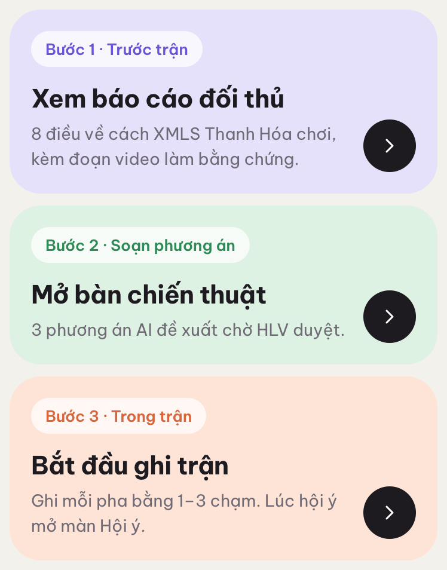
2 · Cài lên điện thoại và dùng khi mất mạng
Làm một lần, cần có mạng. Sau đó app mở như một ứng dụng bình thường.
iPhone, iPad: dùng Safari
Bấm: mở đường link app bằng Safari → nút Chia sẻ (ô vuông có mũi tên lên) → Thêm vào MH chính → Thêm.
Sẽ thấy: biểu tượng Sổ tay HLV trên màn hình chính.
Nếu khác: không thấy dòng "Thêm vào MH chính" thì kéo danh sách xuống thêm. Nếu đang mở bằng Chrome hay Zalo trên iPhone, chép link sang Safari rồi làm lại.
Android: dùng Chrome
Bấm: mở link bằng Chrome → menu ⋮ góc trên → Cài đặt ứng dụng (có máy ghi Thêm vào màn hình chính).
Sẽ thấy: biểu tượng như hình dưới, tên Sổ tay HLV.
Biểu tượng app sau khi cài.Nếu khác: không có dòng cài đặt thì cập nhật Chrome lên bản mới rồi mở lại link. Máy Samsung dùng trình duyệt Samsung Internet: menu ≡ → Thêm trang vào → Màn hình chính.
Mở app lần đầu khi còn mạng
Bấm: biểu tượng Sổ tay HLV. Chờ trang Trận tới hiện đủ.
Sẽ thấy: thanh dưới cùng có 5 mục: Trận tới · Đối thủ · Chiến thuật · Ghi trận · Cầu thủ. Nút bánh răng góc trên là Cài đặt.
Nếu khác: trên máy tính, các mục này nằm ở thanh trên cùng và có thêm Hội ý, Cài đặt.
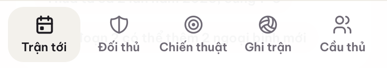
Kiểm tra chạy không cần mạng
Bấm: bật chế độ máy bay → đóng hẳn app → mở lại.
Sẽ thấy: app mở bình thường, ghi trận được như thường.
Nếu khác: tắt chế độ máy bay, mở app một lần nữa khi có mạng, chờ vài giây rồi thử lại. Nên thử việc này ở nhà, trước ngày thi đấu.
3 · Lập đội của mình
Lần đầu mở, app đã có sẵn 13 cầu thủ LPBank Ninh Bình lấy từ nguồn công khai. HLV chỉ cần kiểm lại.
Mở danh sách cầu thủ
Bấm: tab Cầu thủ ở thanh dưới.
Sẽ thấy: danh sách xếp theo vị trí. Nhãn vàng "Nguồn công khai · HLV kiểm lại". Dấu ? cạnh tên nghĩa là hai nguồn ghi khác nhau, cần HLV xem lại.
Nếu khác: danh sách trống hoặc thiếu người thì kéo xuống cuối, bấm Nạp lại danh sách LPBank Ninh Bình. Trận đã ghi không bị ảnh hưởng.
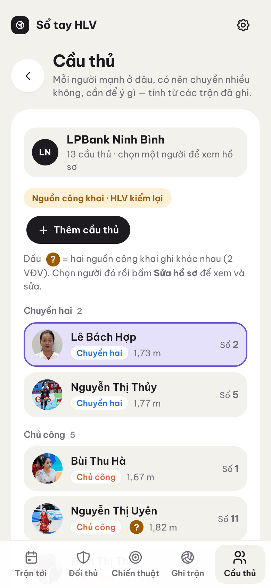
Người có dấu ? (số 11, số 26) cần HLV xem lại. Chọn một cầu thủ
Bấm: tên cầu thủ trong danh sách.
Sẽ thấy: thẻ hồ sơ ở đầu trang: số áo, vị trí, chiều cao, số trận, số điểm. Chưa ghi trận nào thì các số là 0.
Nếu khác: thẻ hồ sơ nằm ở đầu trang. Trên điện thoại, cuộn lên trên cùng để thấy.
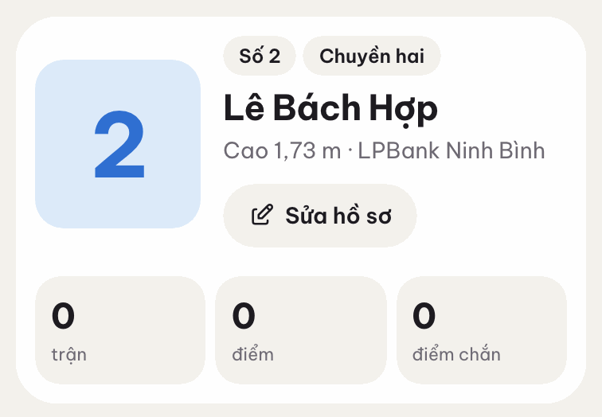
Sửa hồ sơ và xác nhận
Bấm: Sửa hồ sơ → sửa số áo, tên, chiều cao, vị trí → Lưu.
Sẽ thấy: dòng vàng "Chưa xác minh" giải thích chỗ nguồn ghi khác nhau. Bấm Lưu nghĩa là HLV đã kiểm, dấu ? biến mất.
Nếu khác: muốn xoá người thì kéo xuống, bấm Xoá VĐV này. Muốn thêm người thì bấm Thêm cầu thủ ở trên danh sách.
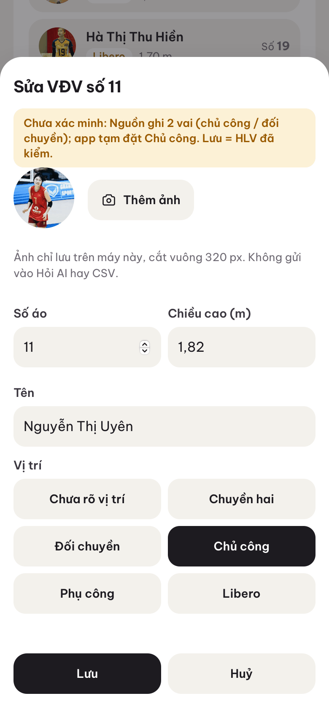
Ảnh cầu thủ trong hình: số 11 và số 26 — SGGP Thể Thao; số 16 — Dân Việt; số 17 — Thể Thao & Văn Hóa. Ghi công đầy đủ nằm trong app.
4 · Tạo trận mới
Mở màn Trận mới
Bấm: tab Ghi trận, hoặc thẻ Bước 3 · Bắt đầu ghi trận ở trang Trận tới.
Sẽ thấy: màn "Trận mới", khung Trận đấu ở trên.
Nếu khác: nếu đang có trận ghi dở, app mở thẳng màn ghi. Muốn trận mới thì kết thúc trận cũ trước (mục 5, bước 9).
Điền thông tin trận
Bấm: chọn Đấu tập hay Chính thức → chọn Đối thủ trong danh sách (đội ngoài danh sách thì chọn "Đội khác…" rồi gõ tên) → kiểm Ngày → chọn Thể thức 5 set hay 3 set → chọn đội Phát bóng trước.
Sẽ thấy: nút đang chọn chuyển sang màu đen.
Nếu khác: dòng "Chưa có hồ sơ cho đội này" dưới ô đối thủ là bình thường. Vẫn ghi trận được.
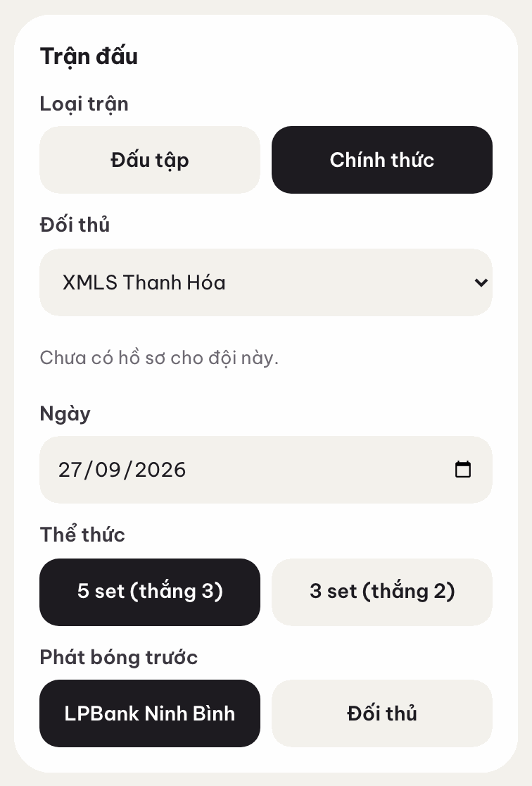
Kiểm đội hình xuất phát set 1
Bấm: để nguyên nếu đội hình đúng. Muốn đổi chỗ: chạm một ô rồi chạm ô khác. Muốn thay người: chạm một ô rồi chạm cầu thủ ở hàng Dự bị.
Sẽ thấy: app đã xếp sẵn theo hệ 5-1: chuyền hai ở P1, chủ công P2 và P5, phụ công P3 và P6, đối chuyền P4, libero riêng.
Nếu khác: ô trống hoặc sai người thường do chưa khai vị trí ở tab Cầu thủ. Sửa ở đó rồi quay lại.
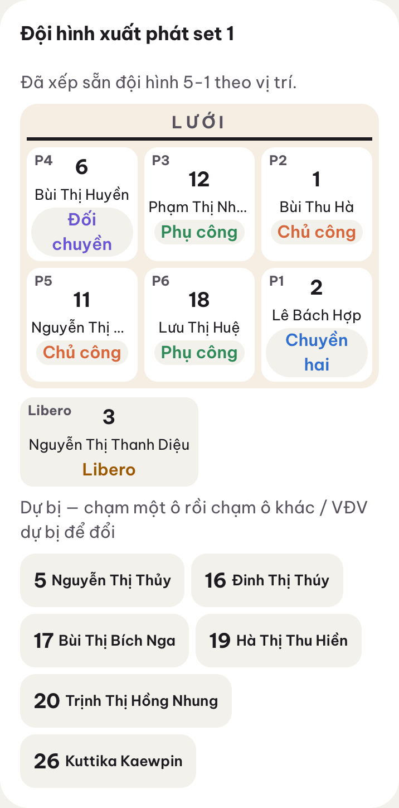
Bắt đầu
Bấm: nút đen Bắt đầu ghi ở cuối trang.
Sẽ thấy: màn ghi trận, tỉ số 0–0.
Nếu khác: app hiện dòng chữ đỏ báo lỗi (ví dụ "Chọn đối thủ hoặc nhập tên đội khác.") thì sửa đúng chỗ đó rồi bấm lại.
5 · Ghi từng pha tại sân (1–3 chạm)
Ghi ngay khi trọng tài thổi còi. Chạm cách pha kết thúc trước, chọn cầu thủ sau. App tự cộng điểm, đổi bên phát và xoay vòng.
Đọc màn ghi
Bấm: không cần bấm gì. Nhìn một lượt trước khi còi đầu tiên.
Sẽ thấy: trên cùng là tỉ số hai đội. Đội đang phát có khung xanh và chữ "● Đang phát". Dưới đó là xoay vòng hiện tại (P1–P6), số lần hội ý còn lại, và sơ đồ 6 người trên sân.
Nếu khác: tỉ số hoặc bên phát sai ngay từ đầu thì xem bước 8 (Chỉnh tay).
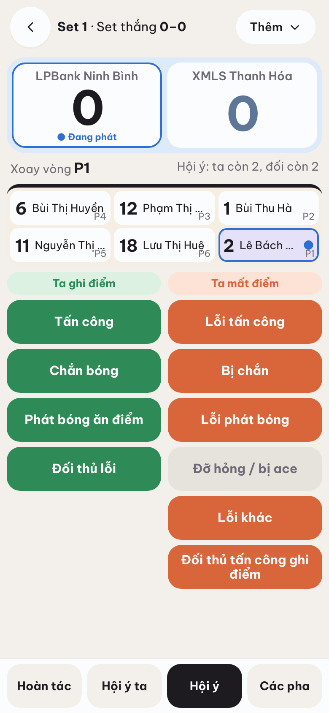
Chạm 1: pha kết thúc thế nào
Bấm: một nút. Cột xanh Ta ghi điểm: Tấn công, Chắn bóng, Phát bóng ăn điểm, Đối thủ lỗi. Cột cam Ta mất điểm: Lỗi tấn công, Bị chắn, Lỗi phát bóng, Đỡ hỏng / bị ace, Lỗi khác, Đối thủ tấn công ghi điểm.
Sẽ thấy: nút đã gồm luôn ghi hay mất điểm. Không cần bấm thêm nút cộng điểm.
Nếu khác: nút mờ là nút không hợp lệ lúc đó. Ví dụ "Đỡ hỏng / bị ace" mờ khi ta đang phát.
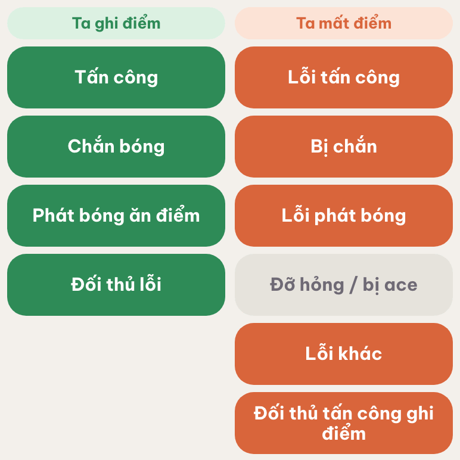
Chạm 2: cầu thủ nào
Bấm: số áo của người vừa đánh (bảng xếp đúng như trên sân). Không nhớ ai thì bấm Không rõ, sửa sau.
Sẽ thấy: bảng đóng lại, tỉ số tăng.
Nếu khác: với "Phát bóng ăn điểm", "Lỗi phát bóng", "Đối thủ lỗi", "Đối thủ tấn công ghi điểm", app không hỏi cầu thủ. Đó là đúng.
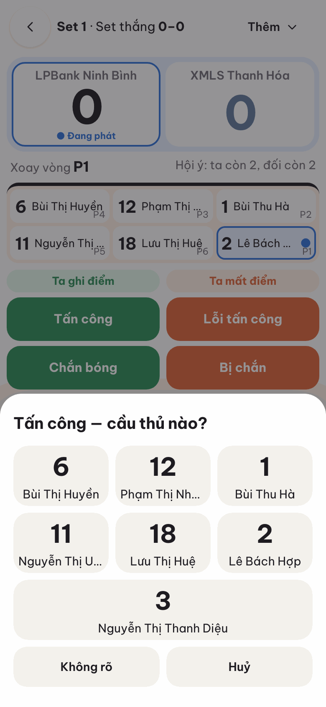
Kiểm dòng "Pha trước"
Bấm: không cần bấm. Liếc dòng này sau mỗi lần ghi. Bấm vào dòng này sẽ mở danh sách các pha.
Sẽ thấy: dòng tím nhắc lại pha vừa ghi: ghi hay mất, cách, cầu thủ, tỉ số.
Nếu khác: ghi nhầm thì bấm Hoàn tác ở thanh dưới ngay (mục 11).
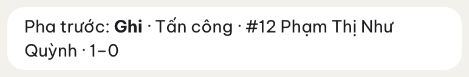
Chạm 3 (tuỳ chọn): chấm đỡ bước 1
Bấm: sau mỗi pha đối thủ phát, ô tím hiện ra. Chấm 0 đến 3: 0 là hỏng, 1 là chỉ đập biên được, 2 là có 2 hướng tấn công, 3 là hoàn hảo. Kịp thì bấm thêm số áo người đỡ.
Sẽ thấy: số đã chọn được tô đậm.
Nếu khác: không kịp thì bỏ qua, cứ ghi pha tiếp theo. Ô tự biến mất.
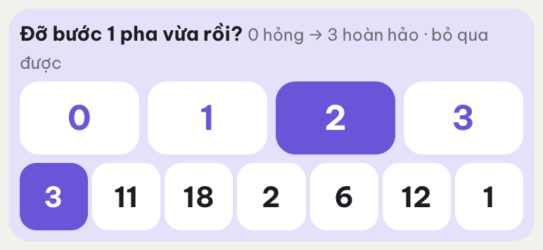
Xem bên phát và xoay vòng tự đổi
Bấm: không cần bấm. App tự đổi.
Sẽ thấy: khi ta giành lại quyền phát, xoay vòng tự nhảy (ví dụ P1 thành P6) và chấm tròn nhỏ báo người đang phát.
Nếu khác: xoay vòng lệch so với sân thật thì dùng Chỉnh tay (bước 8).
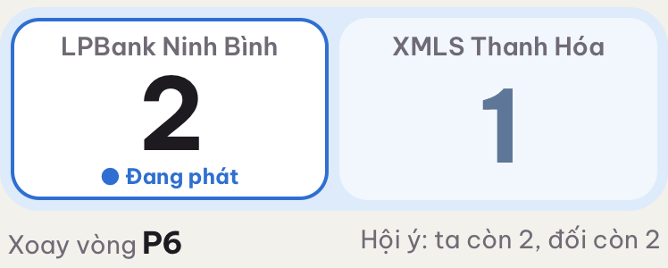
Hết set, bắt đầu set mới
Sẽ thấy: set thường tới 25, set quyết định tới 15, phải hơn 2 điểm. App tự báo "Hết set" và hiện nút Bắt đầu set 2.
Bấm: Bắt đầu set 2 → kiểm đội hình như lúc tạo trận → Bắt đầu.
Nếu khác: set chưa đủ điểm mà thật sự đã hết (ví dụ trọng tài xử thua) thì dùng Thêm ▾ → Kết thúc set (thủ công).
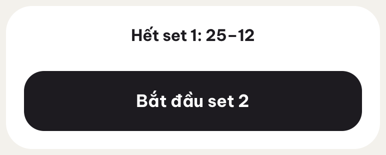
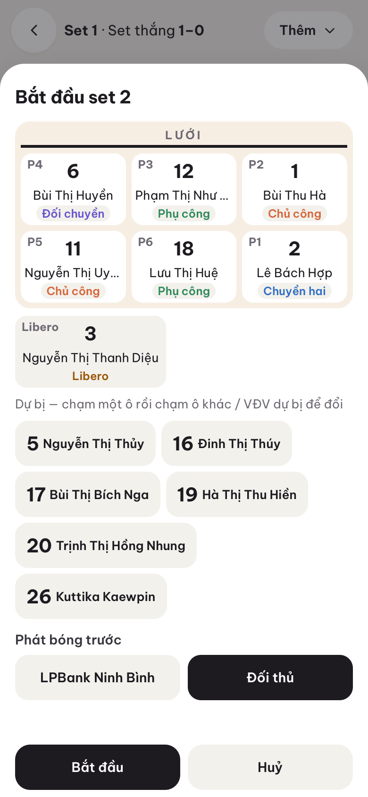
Đối soát tỉ số với trọng tài
Bấm: Thêm ▾ góc trên → Đối soát tỉ số với trọng tài → nhập tỉ số trên bảng → Đối soát. Làm mỗi 5–10 điểm hoặc cuối set.
Sẽ thấy: "Khớp" nếu đúng. Nếu lệch, app ghi LỆCH và không tự sửa, để người ghi tìm pha sai.
Nếu khác: lệch thì bấm Mở các pha để tìm pha ghi nhầm, hoặc Chỉnh tay nếu lỡ nhiều pha.
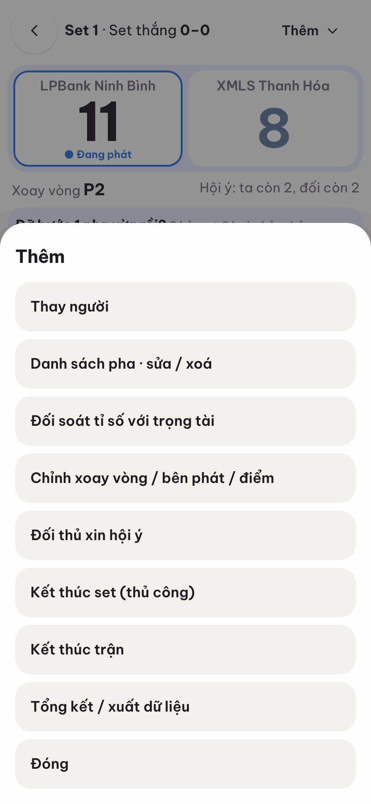
Menu Thêm. 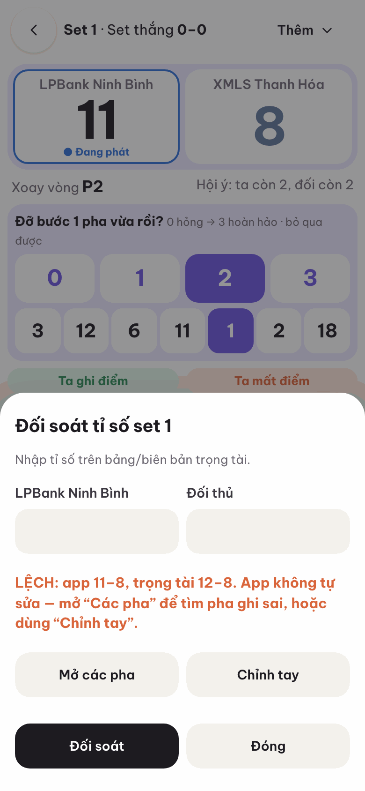
App báo lệch 1 điểm. Chỉnh tay khi lỡ nhiều pha
Bấm: Thêm ▾ → Chỉnh xoay vòng / bên phát / điểm.
Sẽ thấy: nút xoay tới, xoay lùi 1 vòng, đổi bên phát, và "+1 điểm (không rõ cách)" cho từng đội. Dùng để bắt kịp tỉ số rồi ghi tiếp.
Nếu khác: mỗi lần chỉnh đều hoàn tác được bằng nút Hoàn tác.
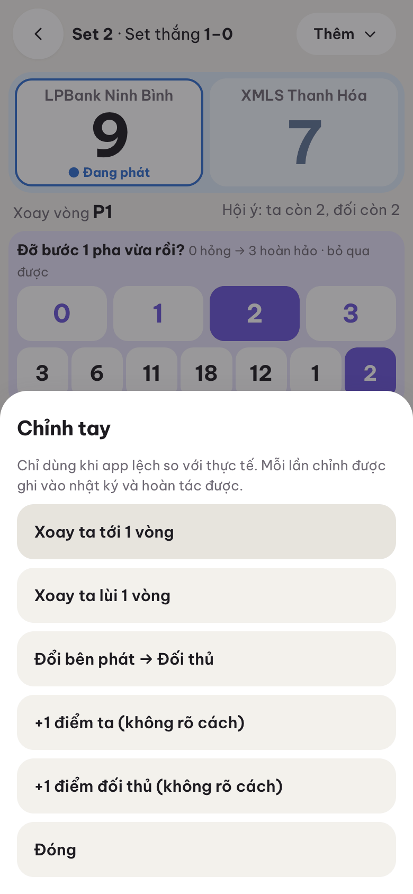
Việc khác trong menu Thêm
Thay người · Đối thủ xin hội ý · Kết thúc set (thủ công) · Kết thúc trận · Tổng kết / xuất dữ liệu.
Bấm: Kết thúc trận khi trận xong mà app chưa tự kết thúc. App hỏi lại một lần. Việc này cũng hoàn tác được.
Sẽ thấy: thẻ "Trận kết thúc" với nút Xem tổng kết.
Nếu khác: nút trong menu bị mờ là việc chưa làm được lúc đó, ví dụ Thay người khi set đã kết thúc.
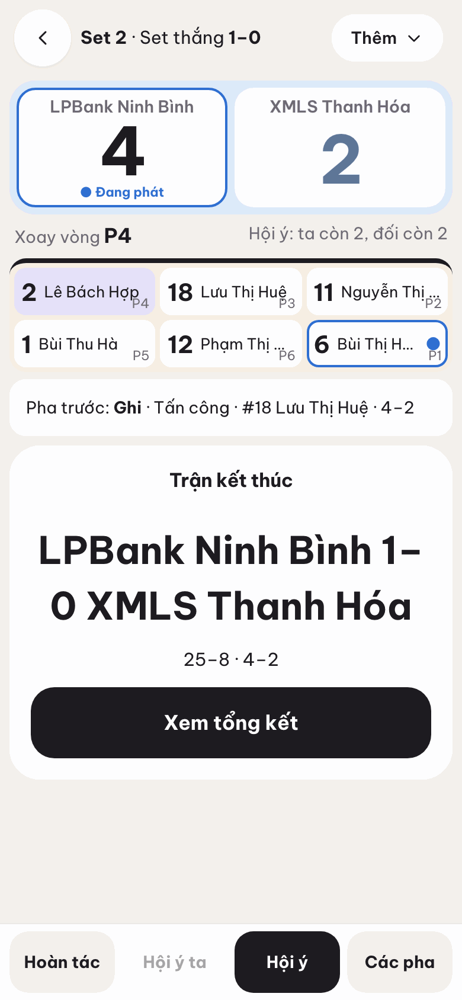
6 · Màn Hội ý lúc xin hội ý
Màn này trước đây gọi là "Màn HLV". Đọc trong khoảng 30 giây.
Mở màn Hội ý
Bấm: Hội ý ta ở thanh dưới màn ghi (app trừ 1 lượt, mỗi set còn 2 lượt), hoặc nút đen Hội ý nếu chỉ muốn xem.
Sẽ thấy: màn "Hội ý". Nút Ghi trận góc trên để quay lại ghi.
Nếu khác: nút "Hội ý ta" mờ nghĩa là set này ta đã dùng hết 2 lượt.
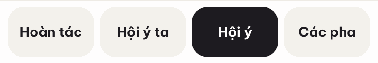
Đọc câu tóm lại
Bấm: Set này hoặc Cả trận để đổi phạm vi.
Sẽ thấy: một câu tóm tắt tình hình, kèm hai con số: lượt ta phát ăn bao nhiêu điểm, khi đối thủ phát ta giành được bao nhiêu pha.
Nếu khác: câu tóm lại chỉ tính từ các pha đã ghi. Ghi thiếu pha thì câu này có thể lệch.
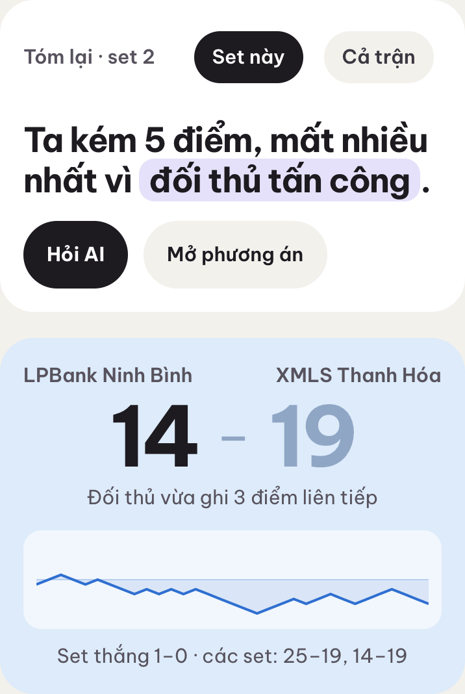
Đang mạnh ở đâu, nên thử gì
Bấm: không cần bấm. Kéo xuống dưới khối Tóm lại.
Sẽ thấy: thẻ xanh Đang mạnh ở và thẻ tím Nên thử, mỗi thẻ có con số làm bằng chứng.
Nếu khác: đầu set ít pha thì thẻ có thể chưa hiện. Ghi thêm vài pha. App chỉ nêu số liệu, quyết định vẫn là của HLV.
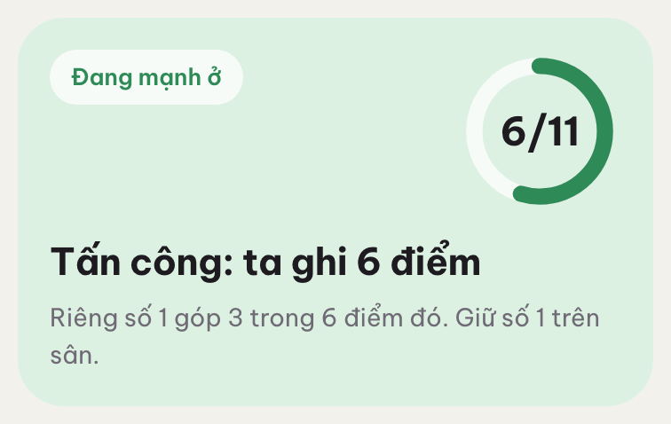
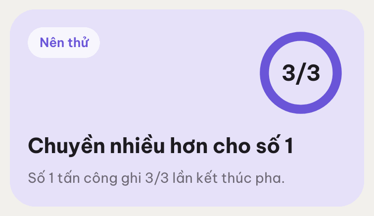
So điểm hai đội theo cách ghi
Bấm: kéo xuống tiếp.
Sẽ thấy: khối Số liệu nói gì: điểm ta (xanh) và đối thủ (cam) theo từng cách: tấn công, chắn bóng, phát bóng, lỗi bên kia.
Nếu khác: điểm của đối thủ app suy ra từ các pha ta mất điểm. Ghi đúng cột "Ta mất điểm" thì số này mới đúng.
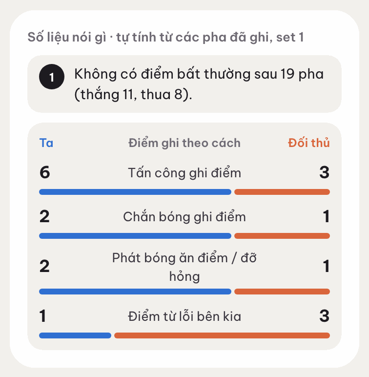
Xem chi tiết theo xoay vòng
Bấm: Xem chi tiết set 1 ở cuối màn Hội ý.
Sẽ thấy: các ô P1–P6 xếp như trên sân. Số lớn là hiệu số điểm của vòng đó. "Đỡ phát" là khi đối thủ phát ta giành được bao nhiêu. "Ta phát" là lượt ta phát ăn bao nhiêu. Vòng kém nhất có viền cam. Dưới nữa có bảng tấn công, đỡ bước 1 và phát bóng theo từng người.
Nếu khác: vòng có "0–0 pha" là chưa có pha nào ở vòng đó, bỏ qua.
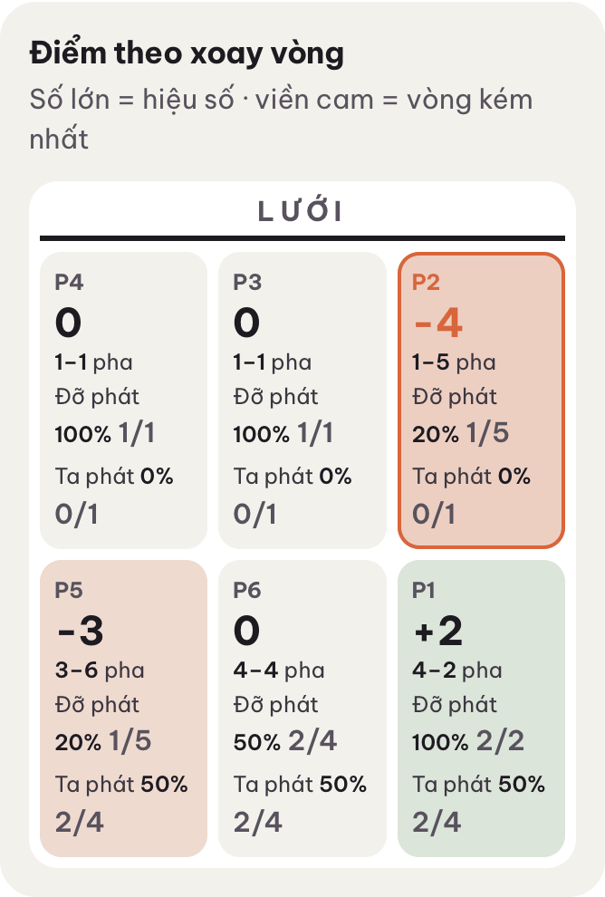
Hỏi AI
Nút Hỏi AI ở màn Hội ý và màn Tổng kết đang được làm lại. Hướng dẫn phần này sẽ được bổ sung sau. Kết quả từ AI chỉ để tham khảo, luôn đối chiếu với số liệu trên màn Hội ý.
7 · Xem lại các pha, tổng kết và lịch sử
Danh sách các pha
Bấm: Các pha ở thanh dưới màn ghi.
Sẽ thấy: mọi pha, mới nhất ở trên. Mỗi dòng có set và số thứ tự pha, tỉ số, cách kết thúc, cầu thủ, xoay vòng, bên phát. Vạch xanh là ta ghi, vạch cam là ta mất.
Nếu khác: có dòng "Bị bỏ qua" nghĩa là sau khi sửa, pha đó rơi ra ngoài set. Bấm vào để sửa hoặc xoá.
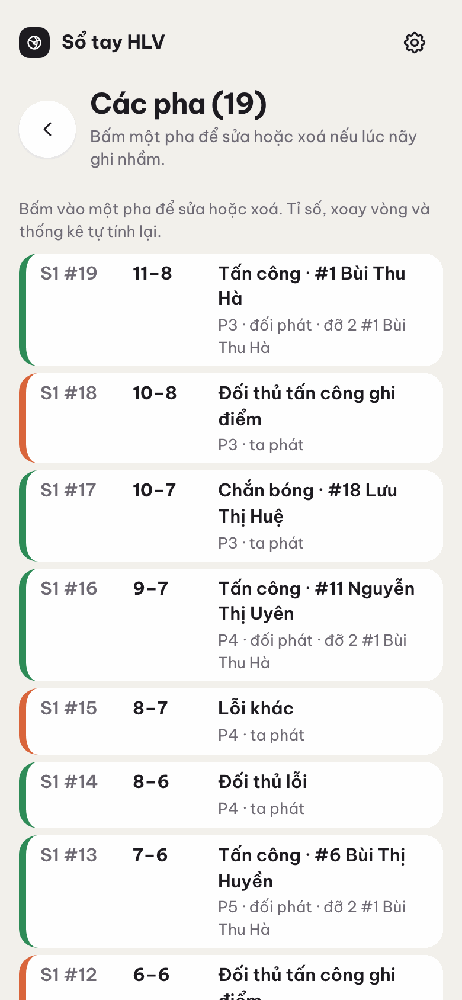
Sửa hoặc xoá một pha
Bấm: một dòng bất kỳ, kể cả pha ở set trước → đổi cách, cầu thủ hoặc điểm đỡ bước 1 → Xong. Muốn xoá thì bấm Xoá pha này ở cuối bảng.
Sẽ thấy: tỉ số, xoay vòng và thống kê phía sau tự tính lại.
Nếu khác: sau khi sửa mà app báo set kết thúc khi chưa đủ điểm, xem lại các pha quanh chỗ vừa sửa.
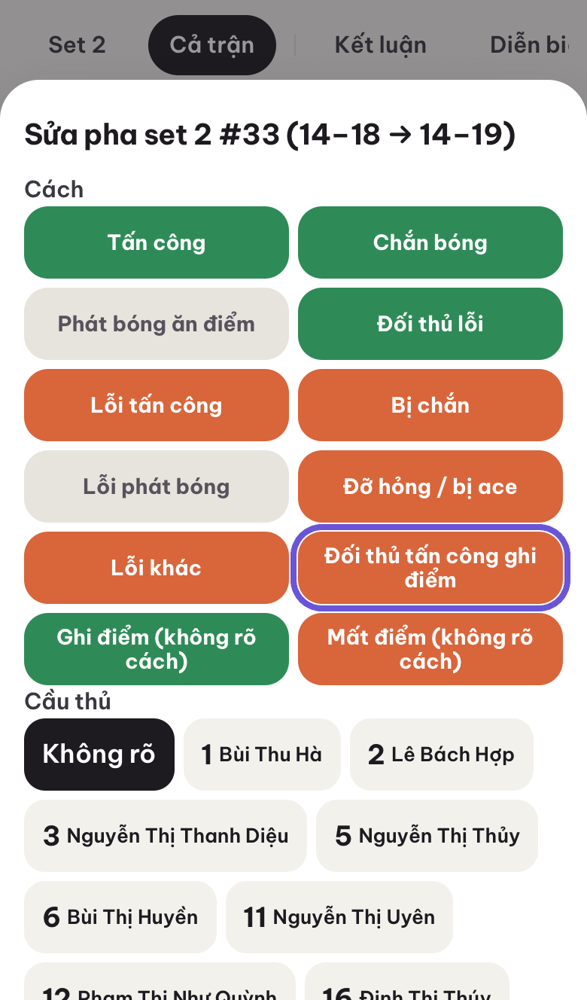
Tổng kết trận
Bấm: Xem tổng kết khi trận kết thúc, hoặc Thêm ▾ → Tổng kết / xuất dữ liệu giữa trận.
Sẽ thấy: kết quả, tỉ số từng set, và các nút In / PDF, Chia sẻ, Xuất CSV, Xuất JSON, Hỏi AI, Xem lại video. Dưới đó là các con số chính của cả trận.
Nếu khác: Chia sẻ mở bảng chia sẻ của máy để gửi Zalo. Máy không hỗ trợ thì app tự sao chép nội dung để dán.
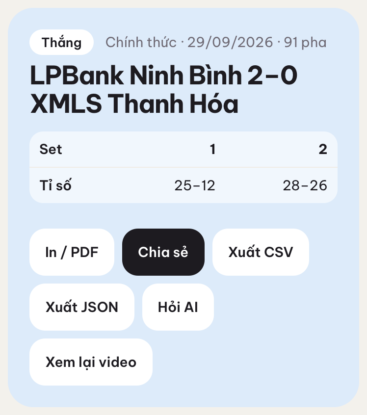
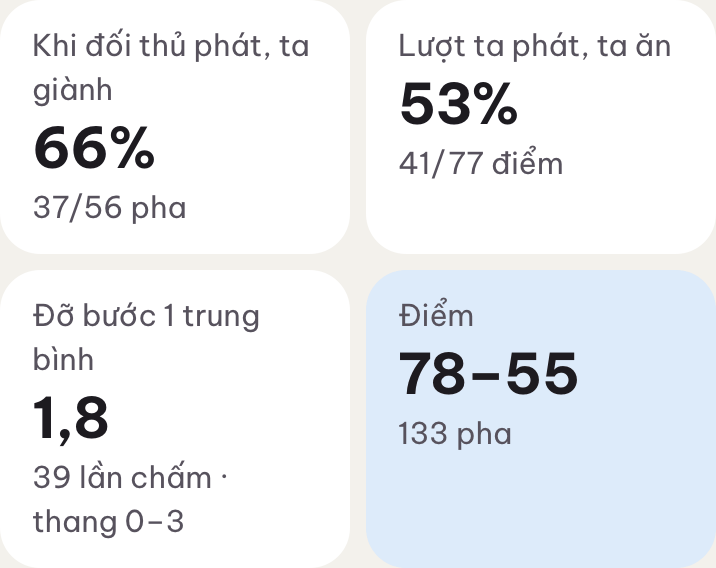
Lịch sử trận
Bấm: trang Trận tới → Tất cả trận (ở khối "Trận gần đây").
Sẽ thấy: mọi trận đã ghi trên máy này, mới nhất trước. Bấm một trận để mở tổng kết. Trận còn dở có nút Tiếp tục ghi.
Nếu khác: nút cam Xoá xoá vĩnh viễn trận khỏi máy. App hỏi lại trước khi xoá.
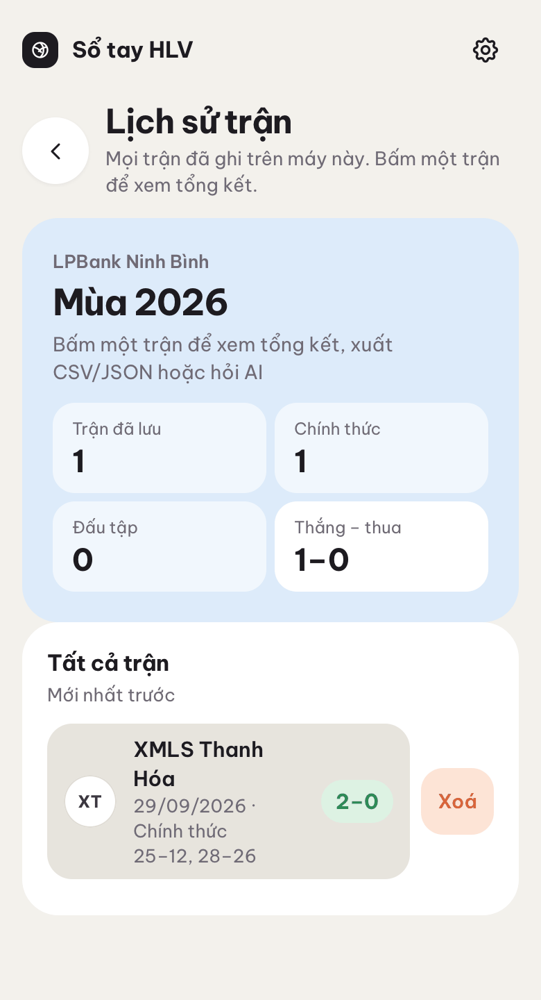
Xem lại video trận
Bấm: Xem lại video (ở Tổng kết, hoặc Mở nhanh trên trang Trận tới) → chọn trận → Chọn video trên máy hoặc dán link YouTube rồi bấm Mở → nhập phút:giây của pha đầu tiên → Đặt mốc. Với video trên máy: tua tới pha đầu rồi bấm Lấy lúc đang phát.
Sẽ thấy: danh sách pha bên dưới. Bấm một pha để tua tới đó, sớm 5 giây. Lọc theo ghi hay mất, cầu thủ, xoay vòng.
Nếu khác: chỉ khớp khi trận được ghi trực tiếp tại sân. Lệch thì đặt lại mốc. Video YouTube cần mạng, video trên máy thì không.
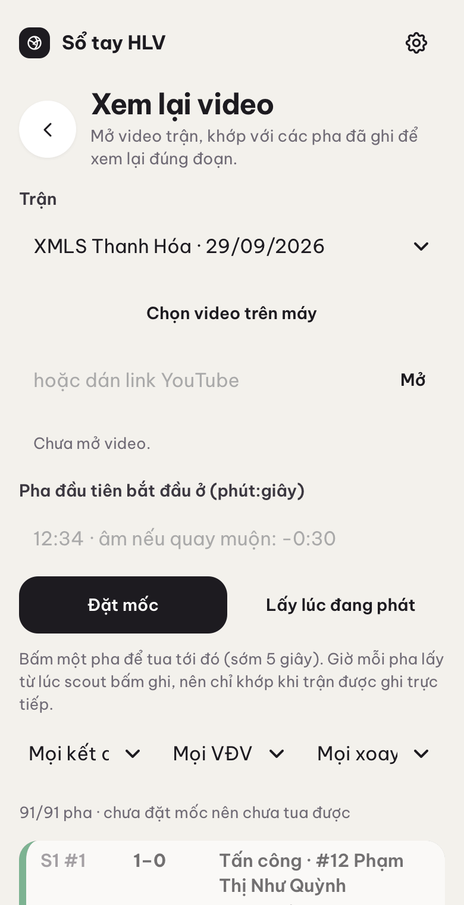
8 · Đọc báo cáo đối thủ và sa bàn chạy lại pha
Báo cáo đối thủ gom mọi thứ đã biết về đội sắp gặp. Hiện có báo cáo cho XMLS Thanh Hóa. Nên xem trên máy tính hoặc máy tính bảng.
Mở báo cáo
Bấm: tab Đối thủ, hoặc thẻ Bước 1 · Xem báo cáo đối thủ ở trang Trận tới.
Sẽ thấy: đếm ngược tới trận, và một câu tóm lại cách đối thủ chơi, kèm 3 dòng bối cảnh.
Nếu khác: muốn xem đội khác thì bấm Các đội khác góc phải. Trang đó là nhận xét của bình luận viên, cần kiểm lại bằng video.
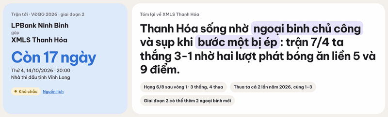
Ba điều quan trọng nhất
Bấm: không cần bấm. Đọc ba thẻ ngay dưới phần tóm lại.
Sẽ thấy: 3 thẻ màu: Điểm mạnh nhất, Nên khai thác, Cần để ý. Mỗi thẻ có nhãn độ chắc và nguồn: bình luận viên, đếm từ bảng điểm, hay báo chí.
Nếu khác: thẻ có nhãn "Khá chắc" hay "Trung bình" thì nên xem thêm video trước khi dựa vào.
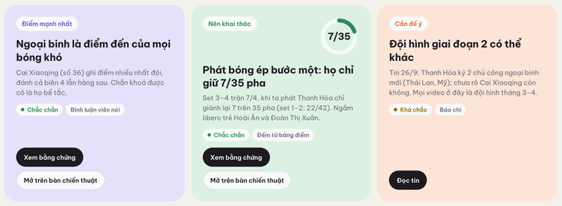
Từng xu hướng, kèm bằng chứng
Bấm: Xem bằng chứng để mở đoạn video đúng phút (cần mạng). Mở trên bàn chiến thuật để soạn phương án đáp trả.
Sẽ thấy: mỗi thẻ có câu nhận xét, trích lời bình luận viên kèm phút video, và nhãn độ chắc.
Nếu khác: không mở được video thì kiểm mạng. Mọi phần chữ vẫn đọc được khi mất mạng.
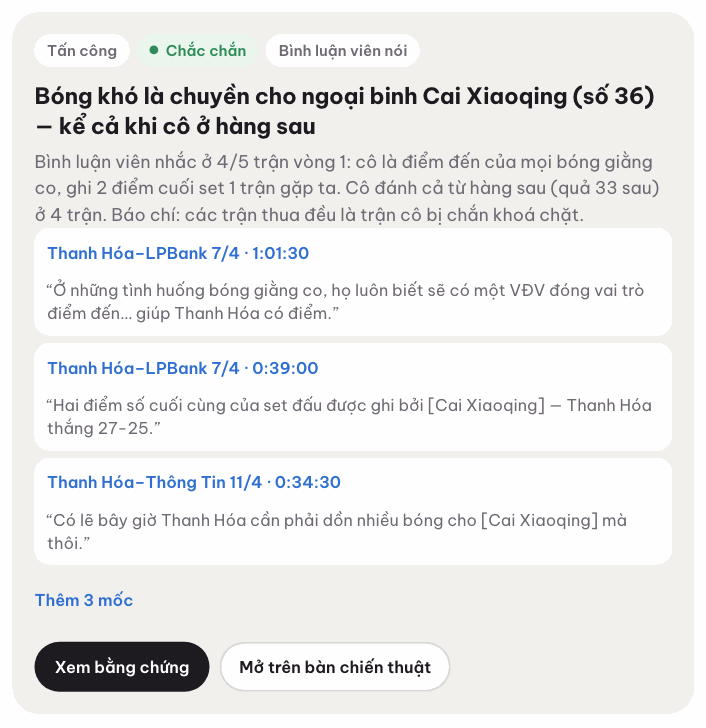
Số đếm từ bảng điểm
Bấm: không cần bấm. Kéo xuống khối "Đếm thật từ bảng điểm".
Sẽ thấy: các thanh ngang cho biết khi ta phát, đối thủ giành lại được bao nhiêu pha ở từng set. Đây là số đếm thật, chắc hơn nhận xét bằng lời.
Nếu khác: dưới thanh có dòng "Xem đoạn này" để mở video đúng lúc chuỗi điểm xảy ra (cần mạng).
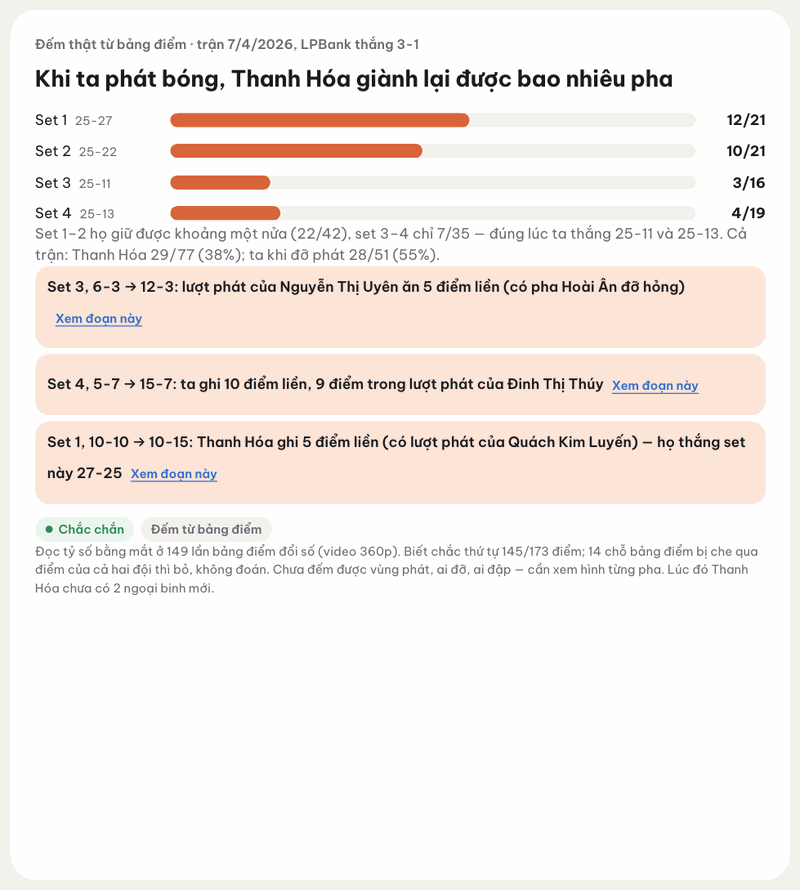
Sa bàn: đối thủ đập từ đâu
Bấm: Phát, Chuyền, Đập ở góc phải để xem vị trí mọi người ở từng khoảnh khắc.
Sẽ thấy: các sân nhỏ nhìn từ trên xuống. Đối thủ ở trên (cam), ta ở dưới (xanh). Vòng đen là người đập, vòng nét đứt là chuyền hai, ô viền tím là chỗ máy đọc được là nơi giậm nhảy đập. Những vị trí này do máy đọc từ video trận.
Nếu khác: khối ghi "Chưa có sa bàn" nghĩa là đội này chưa có dữ liệu từ video. Phần còn lại của báo cáo vẫn dùng được.
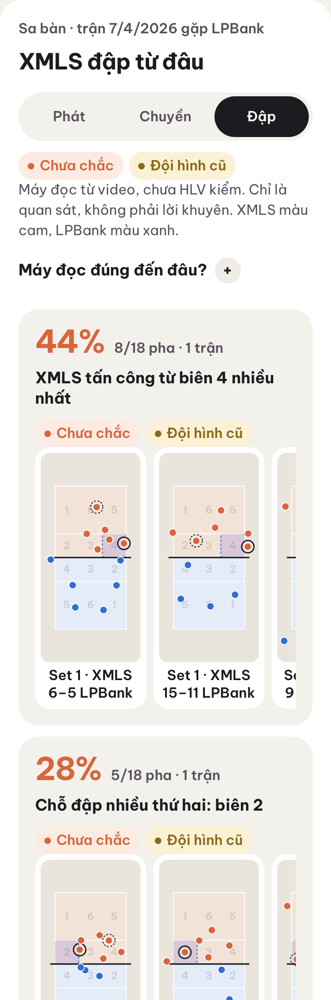
Hiểu các nhãn độ chắc
Máy đo có sai số. Nhãn cho biết con số đủ chắc để dựa vào hay chưa:
- Chưa đủ dữ liệu — máy đo có sai số, số này chưa đủ chắc để ra quyết định. Xem cho biết, chưa đổi chiến thuật chỉ vì nó. Nhãn này hiện khi có dưới 3 trận hoặc dưới 100 pha.
- Đội hình cũ — có thể đã thay đổi — video quay đội hình tháng 3–4. Đối thủ có thể đã đổi người, nên số này có thể không còn đúng.
- Máy đọc từ video, chưa HLV kiểm — chưa ai xem lại từng pha. Máy đoán đúng chỗ đập khoảng 5–7 trên 10 pha.
- Chắc chắn, Khá chắc, Trung bình — mức tin cậy của từng nhận xét trong báo cáo.
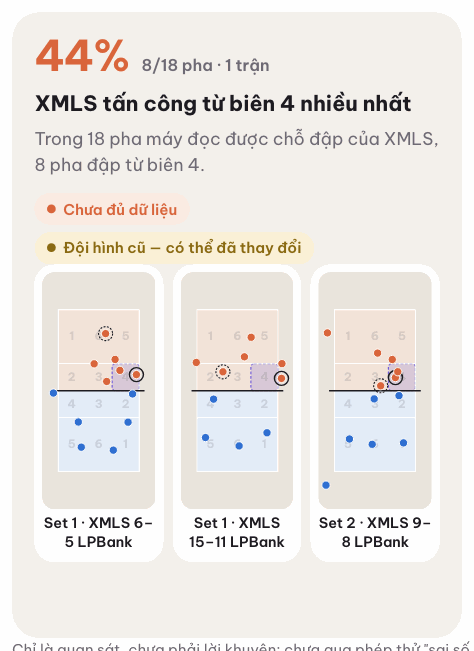
Mở sân lớn và chạy lại pha
Bấm: một sân nhỏ bất kỳ → Chạy lại pha. Chọn 0,5× để chạy chậm, hoặc kéo thanh trượt để tua.
Sẽ thấy: sân lớn với tỉ số trước pha đó. Các chấm di chuyển từ lúc phát, qua lúc chuyền, tới lúc đập. Đường nét đứt là đường bóng máy suy ra. Bên phải ghi ai phát, máy đọc chỗ đập ở đâu.
Nếu khác: máy chỉ có 3 khoảnh khắc thật (phát, chuyền, đập). Đoạn chạy giữa chúng là máy tự nối cho dễ nhìn, không phải đường chạy thật. Máy bật chế độ giảm chuyển động thì chỉ hiện 3 hình đứng yên. Nút Xem pha trên YouTube cần mạng.
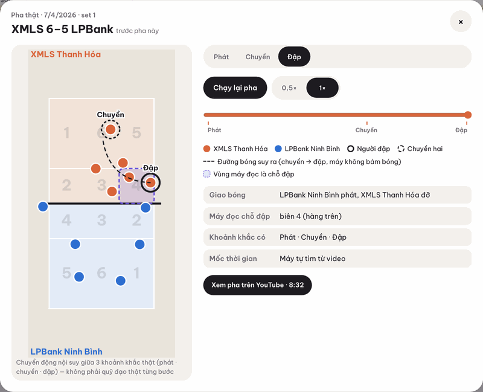
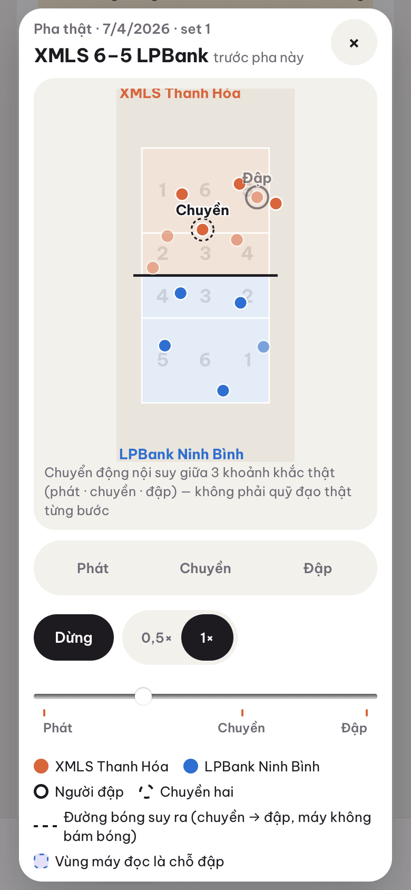
Đang chạy lại: các chấm di chuyển giữa lúc chuyền và lúc đập. Phương án AI đề xuất
Sẽ thấy: khối Đề xuất của AI — HLV quyết với 3 phương án, mỗi phương án có sơ đồ nhỏ và lý do.
Bấm: Mở trên bàn chiến thuật để xem, sửa và lưu (mục 9).
Nếu khác: đây là đề xuất, chưa phải quyết định. HLV sửa hoặc bỏ tuỳ ý.
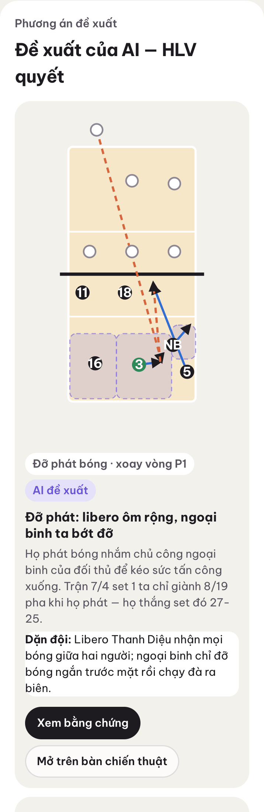
9 · Dùng bàn chiến thuật
Xếp người theo xoay vòng, vẽ đường chạy, lưu phương án và trình chiếu cho đội lúc hội ý. Nên dùng trên máy tính bảng hoặc máy tính.
Mở bàn chiến thuật
Bấm: tab Chiến thuật. Hoặc bấm Mở trên bàn chiến thuật trong báo cáo đối thủ.
Sẽ thấy: sân bên trái, thẻ Tập trung VĐV và khối Phương án bên phải. Dòng nhỏ trên sân ghi đội, pha bóng, xoay vòng và tên phương án đang mở.
Nếu khác: báo "Không tìm thấy phương án này trên máy" nghĩa là phương án chưa có trên máy này (ví dụ mở link từ máy khác). Mở lại từ báo cáo đối thủ bằng nút Mở trên bàn chiến thuật.
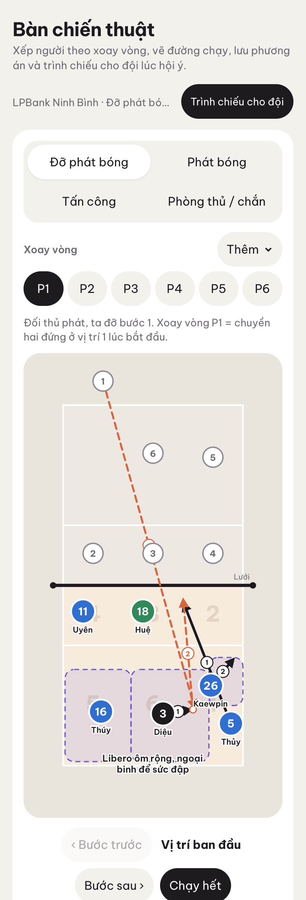
Chọn pha bóng và xoay vòng
Bấm: một trong 4 pha: Đỡ phát bóng, Phát bóng, Tấn công, Phòng thủ / chắn. Rồi chọn xoay vòng P1 đến P6.
Sẽ thấy: người trên sân tự đứng vào chỗ chuẩn. Dòng chữ dưới giải thích, ví dụ "P3 = chuyền hai đứng ở vị trí 3 lúc bắt đầu".
Nếu khác: người đứng lạ chỗ thì bấm Thêm ▾ → Về đội hình chuẩn.
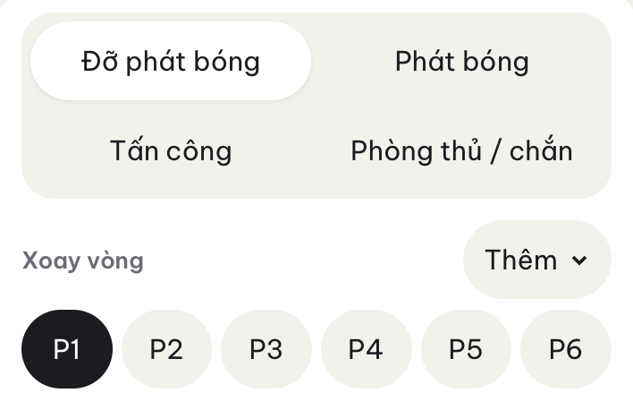
Nút Thêm: đổi cách hiển thị
Bấm: Thêm ▾ bên phải hàng xoay vòng.
Sẽ thấy: Libero vào sân, Cả sân hoặc Nửa sân, Hiện đối thủ. Nhóm "Sửa bảng": Làm lại, Xoá nét vẽ, Về đội hình chuẩn. Dưới cùng là bảng màu theo vị trí.
Nếu khác: không thấy nút Libero vào sân nghĩa là đội chưa khai libero ở tab Cầu thủ.
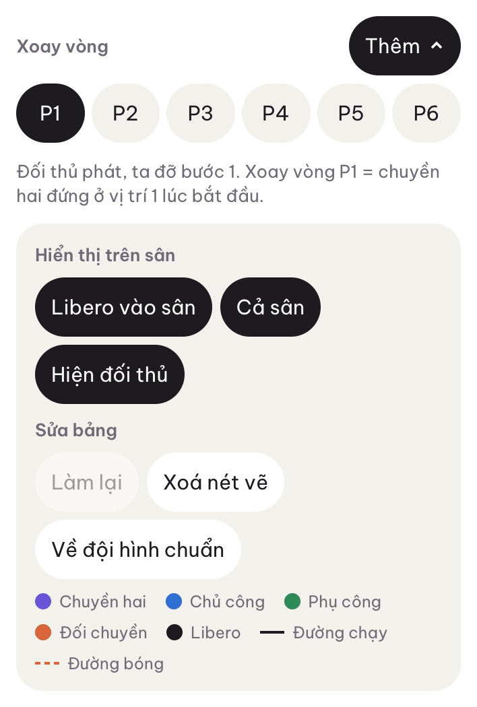
Xem từng bước của phương án
Bấm: Bước sau › để đi từng bước, Chạy hết để xem liền một lượt, ‹ Bước trước để lùi.
Sẽ thấy: cầu thủ chạy theo mũi tên đã vẽ. Dòng giữa ghi "Vị trí ban đầu" hoặc "Bước 1/2".
Nếu khác: dòng giữa ghi "Vẽ mũi tên chạy hoặc đường bóng để xem mô phỏng từng bước" nghĩa là phương án chưa có nét vẽ nào.
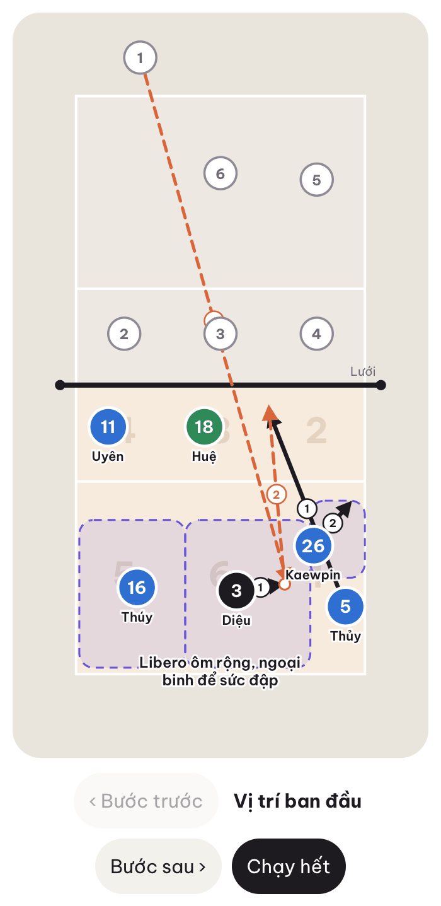
Vị trí ban đầu. 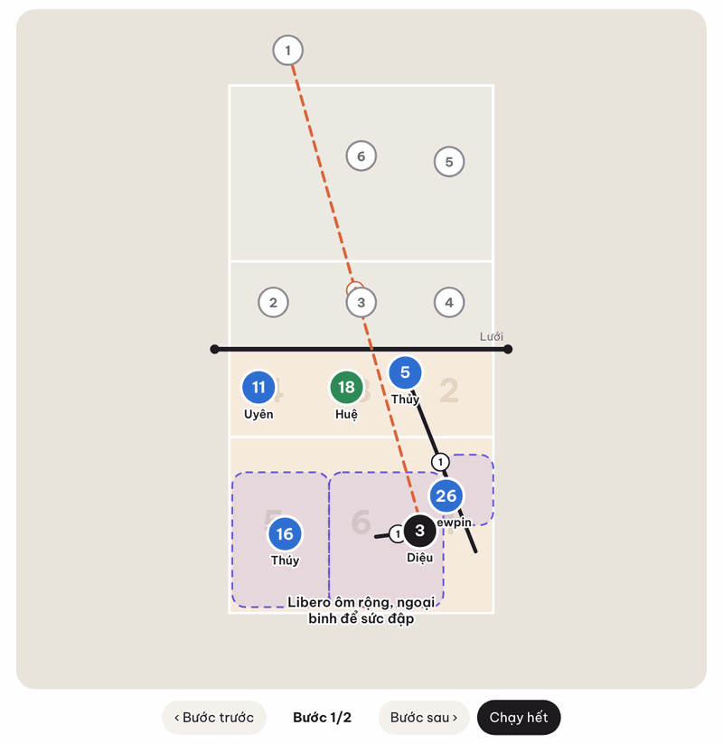
Bước 1/2: libero và chủ công đã chạy vào chỗ. Xem một cầu thủ phải làm gì
Bấm: chế độ Xếp người → chạm một cầu thủ trên sân. Chạm thêm người thứ hai để xem hai người phối hợp. Chạm chỗ trống để bỏ chọn.
Sẽ thấy: thẻ ghi Ở đâu, Khi nào, Làm gì, và ô Dặn riêng để gõ lời dặn cho người đó.
Nếu khác: muốn đổi chỗ đứng thì kéo cầu thủ tới chỗ mới.
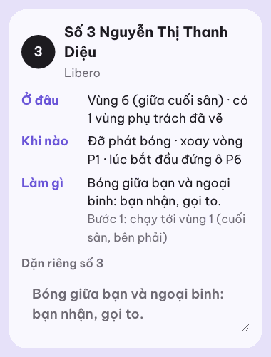
Vẽ đường chạy và đường bóng
Bấm: Vẽ → chọn công cụ: Mũi tên chạy (kéo từ một cầu thủ), Đường bóng, Vùng phụ trách (kéo để khoanh vùng), Ghi chú chữ (chạm lên sân).
Sẽ thấy: nét mới hiện trên sân. Ô Nét mới thuộc Bước 1: bấm + để nét tiếp theo thành bước 2. Các nét cùng bước chạy cùng lúc.
Nếu khác: vẽ nhầm thì bấm Hoàn tác. Muốn xoá hết thì Thêm ▾ → Xoá nét vẽ.
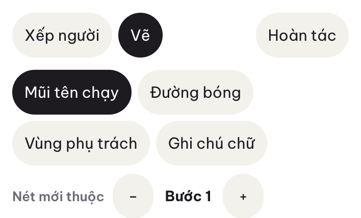
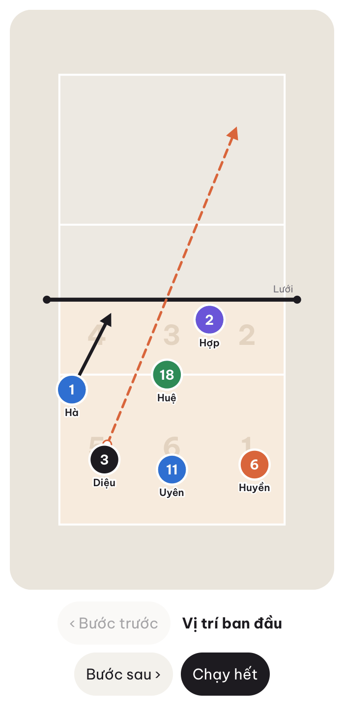
Mũi tên đen: đường chạy của cầu thủ. Nét cam đứt: đường bóng. Lưu phương án
Bấm: gõ Tên phương án và Dặn chung cả đội → Lưu phương án.
Sẽ thấy: phương án hiện trong danh sách, thẻ xanh là phương án đang mở. Phương án từ báo cáo có nhãn AI. Khi sửa một phương án đã lưu: Lưu thay đổi ghi đè, Lưu thành bản mới giữ bản cũ. Bảng mới mở sân trống.
Nếu khác: bấm Xoá cạnh một phương án, app đổi nút để hỏi lại; bấm lần nữa mới xoá. Mục "Mẫu có sẵn" không xoá được.
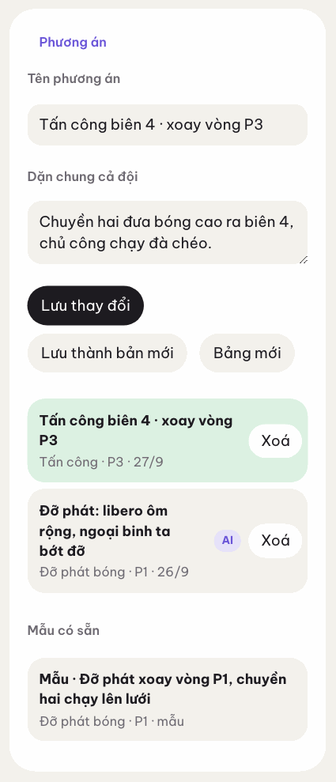
Trình chiếu cho đội
Bấm: Trình chiếu cho đội góc phải trên.
Sẽ thấy: chỉ còn sân và các nút đi từng bước. Trong lúc trình chiếu không kéo nhầm được người. Bấm Thoát trình chiếu để quay lại.
Nếu khác: trên điện thoại màn trình chiếu nhỏ. Nên chiếu từ máy tính bảng hoặc nối màn hình lớn.
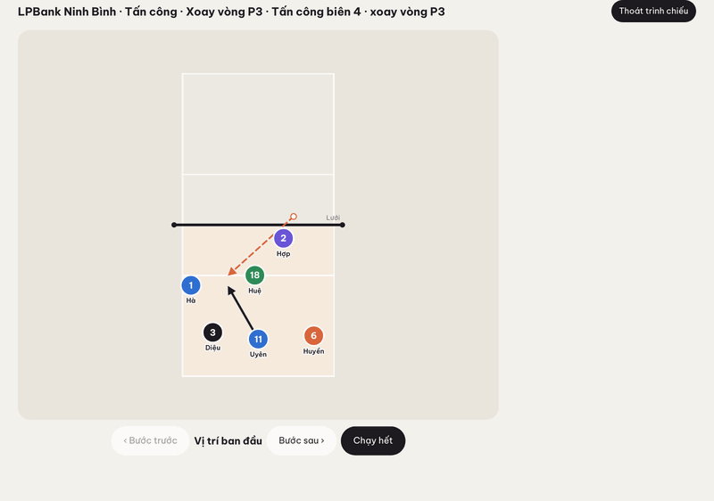
10 · Sao lưu và xuất dữ liệu
Dữ liệu chỉ nằm trên máy đang dùng. Xoá dữ liệu trình duyệt hoặc đổi máy mà chưa sao lưu là mất hết. Nên sao lưu sau mỗi trận.
Sao lưu toàn bộ
Bấm: bánh răng Cài đặt góc trên → khối Sao lưu dữ liệu → Sao lưu toàn bộ. Hoặc nút Sao lưu ở khối Mở nhanh trang Trận tới.
Sẽ thấy: máy tải về file tên như
scout_saoluu_2026-09-27.json. File có đội, ảnh cầu thủ và mọi trận.Nếu khác: gửi file qua Zalo hoặc email cho chính mình để có bản ở chỗ khác. File có ảnh nên có thể nặng.
Nhập file trên máy mới
Bấm: Nhập file sao lưu trong Cài đặt, hoặc Nhập file ở trang Trận tới → chọn file .json.
Sẽ thấy: app hỏi có thay đội hiện tại bằng đội trong file không. Trận trùng thì app hỏi có ghi đè không; chọn Huỷ để chỉ nhập trận mới.
Nếu khác: file không nhập được thì kiểm đúng file đuôi .json tải từ app, chưa bị đổi tên hay sửa.
Xuất một trận
Bấm: Tổng kết trận → Xuất CSV (mỗi pha một dòng, mở bằng Excel hoặc Google Sheets) hoặc Xuất JSON (bản sao đầy đủ của trận). In / PDF cho bản in gọn.
Sẽ thấy: máy tải file về. CSV mở được bằng Excel, JSON dùng để nhập lại vào app.
Nếu khác: trên iPhone, file tải về nằm trong ứng dụng Tệp, thư mục Tải về.
11 · Hỏi đáp và lỗi hay gặp
Bấm nhầm một pha
Bấm: Hoàn tác ở thanh dưới màn ghi, ngay sau khi bấm nhầm.
Sẽ thấy: thông báo "Đã hoàn tác: pha …" và tỉ số quay lại.
Nếu khác: nhầm từ lâu thì vào Các pha, bấm đúng pha đó để sửa hoặc xoá (mục 7). Không chắc ai đánh thì chọn "Không rõ", sửa sau.
Mất mạng giữa trận
Cứ ghi tiếp. Mọi thứ lưu ngay trên máy sau từng chạm, không cần mạng. Chỉ video YouTube là không mở được.
Tải lại trang, tắt app, hết pin giữa trận
Mở lại app. Trang Trận tới có thẻ Tiếp tục ghi trận. Không mất pha nào đã ghi.
Đổi điện thoại mới, mất hết dữ liệu
Dữ liệu không tự chuyển sang máy mới. Trên máy cũ: Sao lưu toàn bộ. Trên máy mới: Nhập file sao lưu (mục 10). Nếu máy cũ đã mất và chưa có file sao lưu thì không lấy lại được. Phương án trên bàn chiến thuật cũng phải soạn lại.
Thanh vàng "Không lưu được vào máy"
Thường do đang mở ở chế độ ẩn danh hoặc máy đầy bộ nhớ. Xuất JSON trận đang ghi ngay, rồi mở lại app ở chế độ thường.
Tỉ số trên app khác bảng điểm
Dùng Đối soát tỉ số (mục 5, bước 8). App báo lệch nhưng không tự sửa. Tìm pha sai trong Các pha, hoặc dùng Chỉnh tay để cộng điểm "không rõ cách" rồi ghi tiếp.
Mẹo cho người ghi
- Bật chế độ không làm phiền, tăng độ sáng. App giữ màn hình sáng khi đang ở màn ghi.
- Chạm cách kết thúc trước, chọn cầu thủ sau.
- Đối soát tỉ số mỗi 5–10 điểm hoặc cuối set.
- Sao lưu toàn bộ sau mỗi trận.
Hình chụp từ app trên một máy mới, dữ liệu trận là dữ liệu thử. Tỉ số và số liệu trong hình chỉ để minh hoạ.